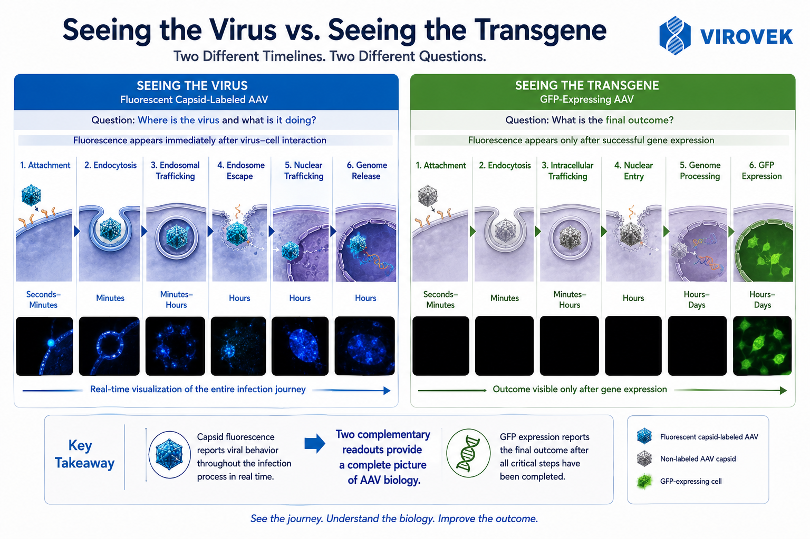
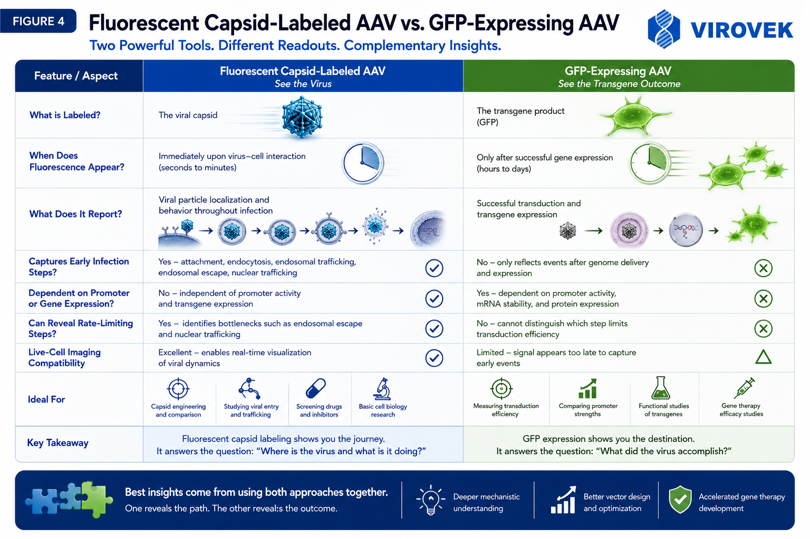
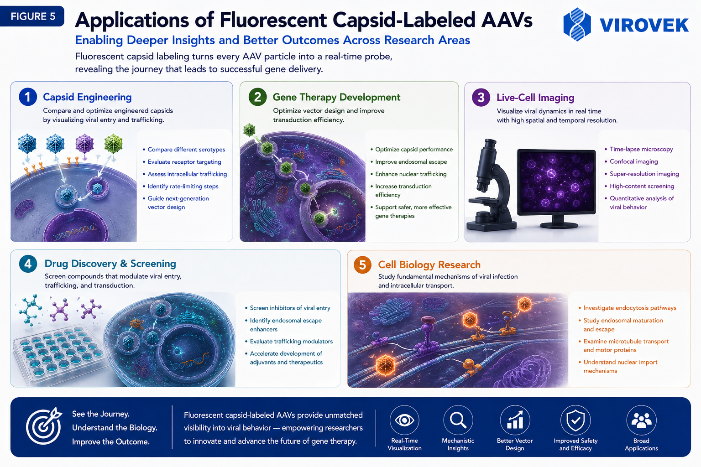

Capsid fluorescence and GFP expression answer different questions
Both approaches produce a fluorescent signal, but the signal originates from a different biological object and appears at a different stage of transduction.
In a fluorescent capsid-labeled AAV, the fluorescence is physically associated with the viral capsid. The signal can therefore be detected as soon as labeled particles contact the cell, allowing researchers to examine attachment, internalization, intracellular localization and trafficking behavior.
In a GFP-expressing AAV, GFP is encoded by the vector genome. A fluorescent cell becomes visible only after the vector has completed multiple upstream steps: cellular uptake, productive intracellular trafficking, nuclear delivery, genome processing, transcription and translation.
Why GFP cannot reveal the early AAV infection journey
AAV transduction is not a single event. It is a sequence of biological steps, and loss or delay at any one of them can reduce the final reporter signal.
Fluorescent capsid labeling provides an immediate particle-associated readout. Researchers can observe how rapidly AAV binds to cells, whether particles are internalized, where they accumulate, and how their localization changes over time. By contrast, GFP fluorescence appears only after successful expression of the packaged reporter cassette. A weak GFP signal therefore does not identify which upstream step failed.
This distinction is particularly important when comparing capsid variants. Two vectors may produce similar endpoint GFP expression while following different intracellular routes. Conversely, two vectors may enter cells at similar levels but differ substantially in productive trafficking, nuclear delivery or genome expression.

Following AAV from cell-surface binding to genome expression
Productive AAV transduction requires successful passage through several cellular barriers.
1. Attachment and endocytosis
The capsid first interacts with cell-surface attachment factors and entry receptors. Following receptor engagement, AAV is internalized through endocytic pathways whose relative contributions can vary by serotype, cell type and experimental condition. Capsid-associated fluorescence can be used to quantify cell binding, uptake kinetics and particle distribution at these earliest stages.
2. Endosomal trafficking and escape
Internalized particles move through intracellular membrane compartments. Many particles may be retained, recycled or routed toward degradation rather than reaching a productive pathway. Escape from endosomal compartments is therefore an important barrier to efficient gene delivery. Direct capsid imaging can help distinguish poor cellular uptake from poor post-entry trafficking.
3. Perinuclear transport, nuclear entry and uncoating
Productive particles must reach the perinuclear region, access the nucleus and release the packaged single-stranded DNA genome. These events are mechanistically distinct from transgene expression. A capsid-associated fluorophore reports particle localization, while genome-encoded GFP reports the later outcome after genome processing, transcription and translation.
What does a negative or weak GFP result actually mean?
Low reporter expression can arise from several different biological causes.
Insufficient binding or uptake
Few particles contact or enter the target cell.
Nonproductive trafficking
Particles enter but remain trapped, are recycled or are degraded.
Limited nuclear delivery
Particles reach the cytoplasm but fail to accumulate productively in the nucleus.
Delayed or incomplete uncoating
The vector genome is not efficiently released from the capsid.
Genome-processing limitations
Second-strand synthesis or other genome-conversion steps may limit expression.
Expression-cassette effects
Promoter activity, cell state, transcript stability or protein maturation may affect the GFP signal.
A GFP endpoint alone combines all of these events into a single final measurement. Fluorescent capsid labeling allows the early stages to be examined independently, helping researchers identify where vector performance begins to diverge.

Where fluorescent capsid-labeled AAV adds the most value
The technology is especially useful when the experimental question concerns vector behavior rather than only the final level of transgene expression.
Capsid engineering and serotype comparison
Compare receptor engagement, uptake, trafficking and nuclear accumulation across wild-type and engineered capsids. This can reveal why a candidate performs better—or why an apparently promising variant fails after entry.
Live-cell and high-content imaging
Track viral particles over time using confocal microscopy, automated imaging or other fluorescence-based platforms. Depending on labeling density, imaging sensitivity and experimental design, capsid fluorescence can support studies of particle localization, co-localization and trafficking kinetics.
Gene-therapy vector optimization
Separate delivery barriers from expression-cassette limitations. Mechanistic information can guide rational decisions about capsid design, targeting ligands, intracellular trafficking and dosing strategy.
Drug discovery and pathway interrogation
Evaluate compounds or genetic perturbations that alter AAV binding, endocytosis, endosomal escape, intracellular transport or nuclear delivery. Capsid tracking can expose effects that would otherwise be compressed into a single endpoint transduction measurement.
Fundamental cell biology
Use AAV as a probe to study virus–host interactions, endosomal maturation, cytoskeletal transport and nuclear import. Pairing particle tracking with compartment markers can provide a more detailed view of intracellular route selection.

Use both readouts when you need the complete picture
Capsid fluorescence is most powerful when combined with an independent functional readout. A well-designed experiment may track labeled particles during early time points and then quantify reporter expression, vector genomes or another functional endpoint at later time points.
This paired approach helps answer three separate questions:
Did the vector reach the cell?
Measure attachment and uptake using the capsid-associated signal.
Did the vector reach the right compartment?
Assess endosomal, cytoplasmic, perinuclear or nuclear localization.
Did delivery produce the intended result?
Measure GFP, another transgene product or the relevant biological response.
Ready to visualize the AAV infection journey?
Virovek provides high-titer AAV manufacturing, custom vector production and precision capsid engineering for research and development programs. Discuss fluorescent capsid labeling, reporter-vector design, serotype selection or a custom AAV study with our scientific team.
Scientific background
- Riyad JM, Weber T. Intracellular trafficking of adeno-associated virus vectors. Front Mol Biosci. 2021;8:742462.
- Golm SK, et al. Fluorescence microscopy in adeno-associated virus research. Viruses. 2023;15:1071.
- Sanlioglu S, et al. Endocytosis and nuclear trafficking of adeno-associated virus type 2 are controlled by Rac1 and phosphatidylinositol-3 kinase activation. J Virol. 2000;74:9184–9196.
- Xiao PJ, et al. Cytoplasmic trafficking, endosomal escape, and perinuclear accumulation of adeno-associated virus type 2 particles are facilitated by microtubule network. J Virol. 2012;86:10462–10473.
- Lux K, et al. Green fluorescent protein-tagged adeno-associated virus particles allow the study of cytosolic and nuclear trafficking. J Virol. 2005;79:11776–11787.